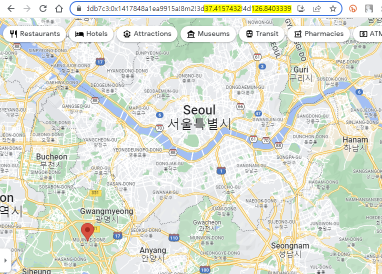
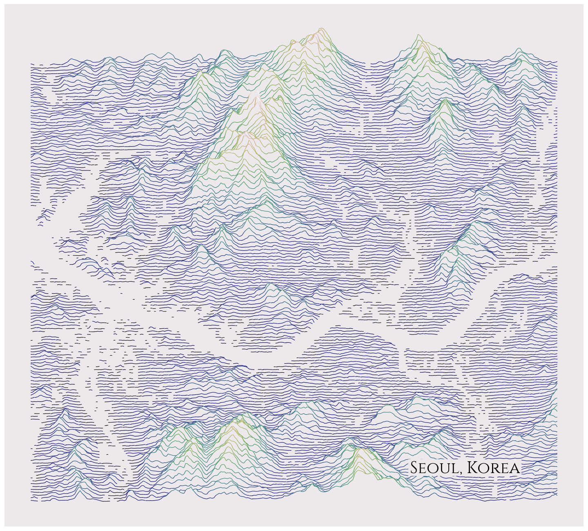
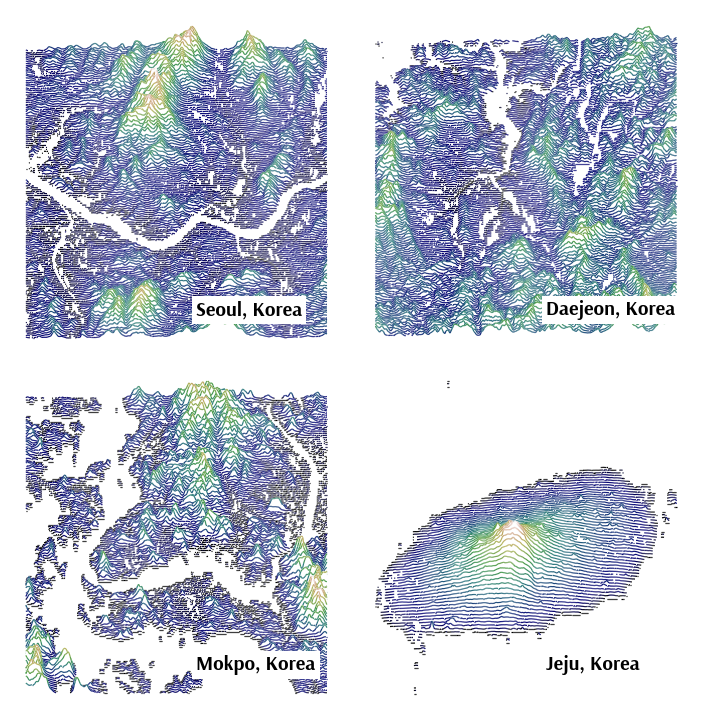
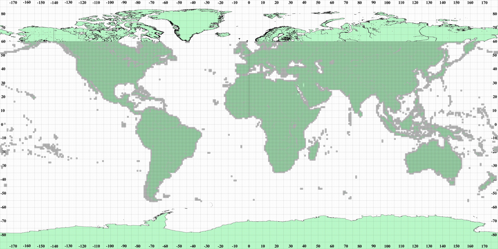

- 지형을 중첩된 line plot으로 그리는 ridgemap 라이브러리를 소개합니다.
- Matplotlib 생태계의 일원으로 쉽게 사용할 수 있습니다.
- 소스 코드를 조금 고쳐줄 필요가 있습니다.
1. ridge-map
- 설명 대신 그림을 한 장 보여드리겠습니다.

아름다운 산악 지형의 풍경이 고전적인 느낌으로 그려져 있습니다.
이 그림은 ridge-map 라이브러리를 사용해서 그린 것으로, 코드는 다음과 같습니다.
1
2
3
4
5
6
7
8
9
10
11
12
13rm = RidgeMap((11.098251,47.264786,11.695633,47.453630))
values = rm.get_elevation_data(num_lines=150)
values=rm.preprocess(
values=values,
lake_flatness=2,
water_ntile=10,
vertical_ratio=240)
rm.plot_map(values=values,
label='Karwendelgebirge',
label_y=0.1,
label_x=0.55,
label_size=40,
linewidth=1)별다른 설명이 없이도 대강 감이 오는 코드입니다.
2. ridge-map 설치
설치는 어렵지 않습니다. pypi에서 다음 명령을 실행하면 간단히 이루어집니다.
1
pip install ridge_map
하지만 약간의 문제가 있습니다.
기본적으로 사용하는 google font 경로가 바뀌면서 오류가 발생합니다.
이 때문에 소스 코드 일부를 수정해야 합니다.
- 파이썬이 설치된 경로를 찾아
파이썬설치경로/site-packages/ridge_map/ridge_map.py를 수정합니다. - 32번째 줄
github_url부분을 다음과 같이 바꿉니다.1
github_url="https://github.com/google/fonts/blob/5c3d8ef085f3084db38936d0dcd39a567dbc1e01/ofl/cinzel/static/Cinzel-Regular.ttf?raw=true", # pylint: disable=line-too-long
3. 지도 그리기
- rige-map으로 지도를 그릴 수 있습니다.
- 지도를 그릴 때 필요한 첫 번째 요소는 경도와 위도입니다.
- 왼쪽 아래와 오른쪽 위지점의 경도와 위도를
Ridgemap()에 차례로 입력합니다. - 구글 지도에서 쉽게 위도와 경도를 확인할 수 있습니다.

- 구글 지도에서 한 지점을 클릭하면 빨간 마커가 생깁니다.
- 주소창 맨 오른쪽 끝에 숫자 두 개가 숨어 있습니다.
- 앞에서부터 해당 지점의 위도와 경도이므로 순서를 바꾸어 입력해야 합니다.
3.1. 서울 지도
- 서울의 좌표를 입력합니다.
- 구글 지도에서 대략
(126.8403339,37.4157432,127.1661446,37.7104195)로 입력했습니다. rm.plot_map()은 Matplotlib Axes 객체를 반환합니다.- 이를 ax라는 이름으로 받아
fig = ax.figure로 Figure 객체를 추출하고, fig.tight_layout()로 여백을 줄이고fig.savefig()로 파일로 저장합니다.1
2
3
4
5
6
7
8
9
10
11
12
13
14
15
16
17rm = RidgeMap((126.8403339,37.4157432,127.1661446,37.7104195))
values = rm.get_elevation_data(num_lines=150)
values=rm.preprocess(
values=values,
lake_flatness=2,
water_ntile=10,
vertical_ratio=100)
ax = rm.plot_map(values=values,
label='Seoul, Korea',
label_y=0.1,
label_x=0.7,
label_size=40,
linewidth=1.2)
fig = ax.figure
fig.tight_layout()
fig.savefig("98_ridgemap_03.png")
3.2. 서울 지도 + 고도
선에 색을 입혀 고도를 표현할 수 있습니다.
위 코드의
rm.plot_map()에 두 줄을 추가합니다.1
2kind="elevation",
line_color=plt.get_cmap('gist_earth'),
북한산과 관악산이 잘 드러납니다.
3.3. Matplotlib Axes 삽입
rm.plot_map()은 Matplotlib Axes를 출력합니다.- 따라서 Matplotlib에서 만들어둔 Figure와 Axes를 사용한 연출이 가능합니다.
rm.plot_map()안에ax=매개변수를 삽입해서 출력 지점을 지정합니다.- 서울, 대전, 목포, 제주 4개 지역을 한번에 표현합니다.
- 축적이 맞지 않음은 유의해야 합니다.
FontManager로 글꼴을 바꿀 수 있습니다.- 적절한 글꼴을 골라 경로를 지정하고,
Ridgemap()에font=font.prop을 추가합니다.1
2
3
4
5
6
7
8
9
10
11
12
13
14
15
16
17
18
19
20
21
22
23
24
25
26
27
28
29
30
31
32
33
34
35from ridge_map import FontManager
font = FontManager('https://github.com/google/fonts/blob/main/ofl/arsenal/Arsenal-Bold.ttf?raw=true')
fig, axes = plt.subplots(ncols=2, nrows=2, figsize=(10, 10))
seoul = (126.8403339, 37.4157432, 127.1661446, 37.7104195)
daejeon = (127.2614837, 36.2194529, 127.6025534, 36.5002879)
mokpo = (126.3071108, 34.6873927, 126.5647852, 34.9315327)
jeju = (126.1623888, 33.1179613, 126.9962384, 33.7520832)
places = [seoul, daejeon, mokpo, jeju]
names = ["Seoul", "Daejeon", "Mokpo", "Jeju"]
for place, name, ax in zip(places, names, axes.ravel()):
rm = RidgeMap(place, font=font.prop)
values = rm.get_elevation_data(num_lines=150)
values=rm.preprocess(
values=values,
lake_flatness=2,
water_ntile=10,
vertical_ratio=100)
rm.plot_map(values=values,
label=f'{name}, Korea',
label_y=0.1,
label_x=0.45,
label_size=20,
linewidth=1.2,
background_color="w",
kind="elevation",
line_color=plt.get_cmap('gist_earth'),
ax=ax)
fig = ax.figure
fig.tight_layout()
fig.savefig("98_ridgemap_05.png")
4. 데이터
- 해발고도 데이터는 2000년에 수집된 NASA의 SRTM을 사용합니다.
- 1 arc-second 단위로, 약 30m 수준의 해상도를 보유하고 있습니다.
- 단 북위 60도와 남위 60도를 넘어서는 지역은 데이터가 없습니다.
